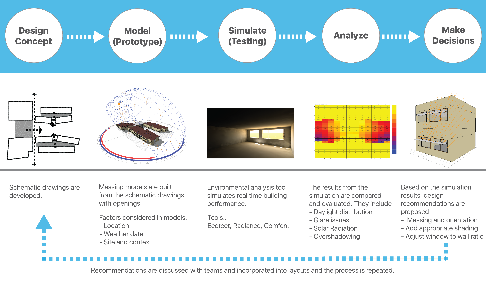

Galaxy Elementary | LEED Platinum School
Project
First LEED Platinum Elementary school in Florida.
Client
School District of Palm Beach County.
Architecture and Sustainable Design
Zyscovich Architects
Tools
Ecotect, Radiance, AutoCAD, LEED templates.

Project Overview:
Galaxy E3 Elementary is the first magnet elementary school in Palm Beach County, Florida specially built to provide E3 (“Energy, Environment and Engineering”) learning to the District’s underprivileged and minority populations. The school’s goal is not only academic excellence in science, math and engineering but to inculcate the principles of sustainability in students and teach them how to protect and preserve our environment at an early age.
The Solution:
Keeping the school’s goal in mind, our team at Zyscovich Architects designed a modern and energy responsive campus that provides a new direction to the 21st century learning. The school building and site are designed with various sustainable features that act as a teaching tool for students to enhance their knowledge. We also worked towards making Galaxy Elementary the first school in Florida to achieve LEED Platinum certification (Highest level of certification in Leadership in Energy and Environmental Design) which recognizes buildings’ compliance to design, construction and operations according to environmentally friendly practices and standards.
My Role:
- Created prototypes early in the design process to evaluate energy and daylight performance of different design strategies.
- Worked out a viable LEED strategy with my team and developed LEED documents to achieve the Platinum certification goal.
- Collaborated with Engineers and other Consultants and updated clients on green building design strategies and details.
- Generated ideas on how the students and staff at Galaxy Elementary (users) can use the various designed sustainability features into their curriculum.
Our Process
Holistic Design Approach
The impact of early energy modeling has proven to be significant in the Architecture design process. It helps to assess design aspects like building orientation, massing, fenestration, daylight, building materials and mechanical systems earlier in the process thus improving the energy performance, reducing costs and errors and helping make wiser decisions.
We used this holistic approach and analyzed various feasible sustainable strategies that would help us earn the LEED Platinum certification and worked towards integrating them in our design.
Prototype and Design Iterations
I built early energy prototypes of various design options from the conceptual stage and compared their initial energy impacts. I provided a systematic daylight analysis (using Ecotect and Radiance) for all the classrooms, learning corridors and wonderment center to improve the quality of the spaces and reduce energy consumption. Based on the simulation results, I recommended the window to wall ratio, ideal shading system and glass window materials for different spaces to maximize daylight and reduce heat gain and glare.
Three shading strategies were compared for the south facing classrooms.
- Horizontal Shades
- Light Shelves
- Horizontal Shelves with louvers
Light Shelf bounces daylight towards the ceiling and provides indirect lighting deep into the space. It can also block glare from overhead sun. We tested this shading type into our prototype and found that although it is an effective shading system, it doesn’t work in Florida. The sun rays are too steep in summer to bounce off the light shelf and reflect deeper.
Our results showed the louvered horizontal shade was the optimum solution as it distributed daylight deeper into the classrooms and reduced glare spots.
The north-facing windows did not need any shade because of the quality of light in the north.
These results were discussed with the design team and implemented in the layouts.
Sustainable Design
Throughout our process, we designed sustainable features keeping our end users (students and staff) in mind and the goal to impart environmental principles into their lifestyle. Some of the features are:
- A vegetated green roof with native plants and white reflective roof where students conduct experiments to measure temperature and moisture differentials.
- Air conditioning system that produces ice during the night, when the energy demand is low and uses it during the day to chill water that cools the buildings. The mechanical rooms are designed with glass windows for students to peer and understand the system better.
- Interactive touch screens are installed around the school displaying real-time information about the building’s electricity usage and water consumption. The students are taught how to take readings, note their findings and discuss them with their peers.
- Solar panels and solar-powered water heating.
- 95% of waste from demolition of old school was recycled, thus diverted from landfills.
- Cistern for capturing rainwater to irrigate gardens.
Even though LEED schools cost 2-3 percent more to build than conventional schools, they use approximately 33 percent less energy, 35 percent less water and 50 percent lower maintainance costs than conventional schools thus providing long term cost benefits .